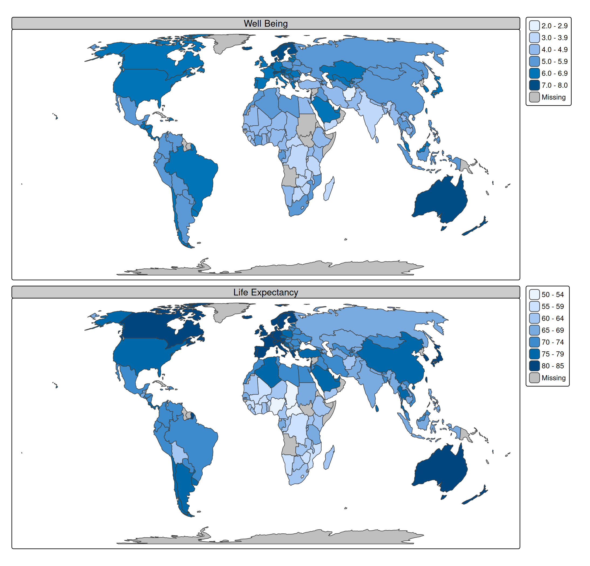

Introduction
tmap is an R package for spatial data visualization.
Map layers
A (thematic) map consists of one or more map layers. Each map layer has a specific set of variables that determine how the objects of that layer are drawn. A visual variable changes the appearance of a spatial object, e.g. fill color or line width.
The following table shows which visual variables are used in standard map layers.
| Map layer | Visual variables |
|---|---|
tm_polygons |
fill (fill color), fill_alpha (fill transparency), col (border color), col_alpha (border color transparency) lwd (border line width), lty (border line type) |
tm_symbols |
size, shape fill (fill color), fill_alpha (fill transparency), col (border color), col_alpha (border color transparency) lwd (border line width) lty (border line type) |
tm_lines |
col (border color), col_alpha (border color transparency) lwd (line width) lty (line type) |
tm_raster |
col (color), col_alpha (transparency) |
tm_text |
text (the text itself), size (font size), col (border color), col_alpha (border color transparency) fontface (font face), fontfamily (font family) |
About the example data
A spatial data object contained in tmap is called World. It is a data frame with a row for each country. The columns are the following data variables plus an additional geometry column which contains the geometries (see sf package):
names(World)
#> [1] "iso_a3" "name" "sovereignt" "continent" "area"
#> [6] "pop_est" "pop_est_dens" "economy" "income_grp" "gdp_cap_est"
#> [11] "life_exp" "well_being" "footprint" "HPI" "inequality"
#> [16] "gender" "press" "geometry"We specify this object with tm_shape
and for convenience assign it to s:
s <- tm_shape(World, crs = "+proj=eqearth")Constant visual values
Each visual variable can be assigned with a contant value. E.g. fill = "red" or size = 2.
An example where several visual variables are specified with constant values:
s +
tm_polygons(
fill = "#ffce00", # fill color
col = "black", # line color
lwd = 0.5, # line width
lty = "dashed") # line type
For advanced users: the default constant values are specified for combinations of visual variables and layer type. See tmap_options("value.const")
Data-driven visual variables
Each visual variable argument can also be specified with a data variable (e.g., a column name):
s + tm_polygons(fill = "press") # a column in World
Another example, where a data-driven symbol layer is drawn on top of a polygon layer
s +
tm_polygons(fill = "grey90") + # constant fill color
tm_symbols(size = "pop_est", # data variable, mapped to symbol size
fill = "well_being", # data variable, mapped to symbol fill color
shape = "income_grp") # data variable, mapped to symbol shape
#> [plot mode] legend/component: Some components or legends are too "high" and are
#> therefore rescaled.
#> ℹ Set the tmap option `component.autoscale = FALSE` to disable rescaling.
In the following example a data-driven text layer is plotted.
s +
tm_polygons(fill = "economy") +
tm_text(text = "name", size = "area")Facets
A facet map is created by specifying two data variables (columns in World) to the visual variable fill:
s + tm_polygons(fill = c("well_being", "life_exp")) 
Improve the titles and remove (duplicate) legend titles
s +
tm_polygons(
fill = c("well_being", "life_exp"),
fill.legend = tm_legend("")) +
tm_layout(panel.labels = c("Well Being", "Life Expectancy"))